Manual de uso do sistema para a equipe dos Lodges Amiens St. e Connolly. Cada capítulo explica, tela por tela, para que ela serve, quem usa e como fazer cada coisa, passo a passo.
Endereço do sistema: https://ds-lodge.vercel.app Os vídeos de cada fluxo estão numerados (01 a 16) e indicados no fim de cada capítulo.
Use sempre a sua própria conta. Nunca entre em nome de outra pessoa: tudo o que você registra fica com o seu nome.
Quem é da gestão confirma a entrada com um código enviado por e-mail (não é preciso aplicativo autenticador). 1. Depois da senha, clique em Enviar código. 2. Abra o e-mail e clique no link (ou digite o código) para concluir. 3. Se o e-mail demorar, espere alguns minutos antes de pedir outro; o envio tem limite por hora.
Porter não tem segunda etapa: entra só com e-mail e senha.
Antes de registrar qualquer coisa, o Porter precisa assumir o posto do turno. 1. Na tela Assumir Posto, escolha a função: Office On Duty (fica em um Lodge) ou Float (cobre os dois Lodges). 2. Se for Office, escolha o Lodge. 3. Clique em Assumir Posto. 4. Se o posto já tiver dono, o sistema mostra quem é e desde quando. Só troque se tiver certeza: ao confirmar, o posto da outra pessoa é encerrado.
Para sair do posto, clique no seu posto (no topo da tela, onde aparece “Você é Office On Duty…”) e depois em Encerrar meu posto. Continuar sem posto deixa você apenas ver as telas, sem registrar.
🎥 Vídeos: 01 (acesso da gestão) e 02 (assumir o posto).
| Termo | O que é |
|---|---|
| Dia operacional | Vai das 07:00 às 07:00 do dia seguinte. Tudo o que acontece de madrugada pertence ao dia que começou às 07:00. |
| Turno Day / Night | Day: 07:00–19:00. Night: 19:00–07:00. |
| Office On Duty | A pessoa que responde por um Lodge no turno. |
| Float | A pessoa que cobre os dois Lodges (das 12h às 24h). |
| Check (Room Check) | A conferência de todos os residentes, lançada em 12:00, 18:00 e 22:00. |
| Ronda | O registro de “Room Check Done” no Handover, de 2 em 2 horas. |
| Seen | Evidência de que o residente foi visto: por check, por visto manual, por entrada (check-in) ou pelo Dinner. |
| Ausência comunicada | O residente avisou que vai sair. A cama continua dele e não haverá No Show no período. |
| No Show | Residente sem nenhuma evidência de presença no dia, confirmado pela lista final. |
| Out | Saída do residente. Office/Float decidem; Manager/Owner efetivam. |
| Warning | Advertência: Verbal, Written ou Final Written (FW). |
| FW | Final Written Warning. Aparece como marca vermelha ao lado do nome. |
| Handover | O diário oficial do Lodge: tudo o que acontece no turno. |
Horários são sempre mostrados no horário de Dublin.
| Tela | Porter (Office/Float) | Manager / Owner / Developer |
|---|---|---|
| Hoje, Tarefas do turno | ✔ | ✔ |
| Residentes, Folha do dia, Seen, Ausências, No Shows, Warnings, Mapa de camas | ✔ | ✔ |
| Handover, Manutenção | ✔ | ✔ (altera status) |
| Fridge, Food Delivery, Dinner, Laundry | ✔ | ✔ (fecha sobras do Dinner) |
| Rota | vê só o publicado | monta e publica |
| Distribuição | ✔ (sem preços) | ✔ |
| Notificações, Compras, Horas, Férias, Relatórios, Usuários, Auditoria | — | ✔ |
Regras gerais: - Porter só registra no Lodge do seu posto (o Float registra nos dois). Em outro Lodge, ele apenas vê. - Preços e notas de compra só a gestão vê. - Há uma janela de correção de 72 horas para anotações e registros: depois disso, só Manager ou Owner corrigem.
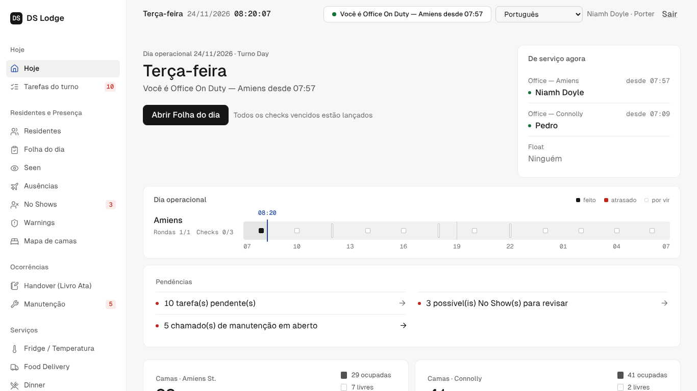
Para que serve: é a tela inicial. Mostra o que importa agora.
O que aparece: - Cabeçalho do turno: dia operacional, turno (Day/Night), o seu posto e o botão da próxima ação (por exemplo “Lançar check 12:00”). - De serviço agora: quem está no Office de cada Lodge e no Float, com o horário em que assumiu. - Dia operacional (a régua): uma linha de 07:00 a 07:00 para cada Lodge. Cada marca é uma ronda ou um check: - quadrado preto = feito; - vermelho = atrasado; - vazado = por vir; - a linha azul é o “agora”. - Pendências: o que está esperando alguém, com link direto: checks por lançar, rondas esquecidas, tarefas, possíveis No Shows, ausências com retorno vencido e chamados em aberto. Clique em uma linha para ir à tela certa. - Quadro de camas: cada quarto com as suas camas — ocupada (cinza), livre (vazada), com Out decidido (âmbar), fora de uso (hachurada). Uma linha vermelha na célula marca um residente com FW. Clique no quadro para abrir o Mapa de camas.
Como usar: olhe a régua e as pendências no começo de cada turno e resolva de cima para baixo.
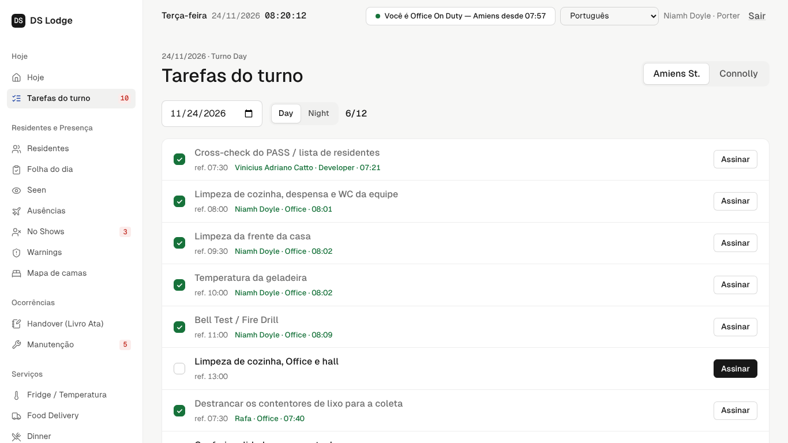
Para que serve: a lista de tarefas do turno, do modelo de cada Lodge, nos 3 idiomas.
Assinar uma tarefa 1. Abra Tarefas do turno. 2. Clique em Assinar na tarefa feita. 3. A assinatura registra seu nome, função e hora.
Quando entrar no sistema, um aviso lista as tarefas esperando por você. Abrir tarefas leva à lista; Depois fecha o aviso (ele volta).
Tarefas pendentes - Tarefa sem assinatura não some: aparece em Ainda pendentes e fica marcada como atrasada depois que o turno termina.
Tarefa extra (gestão) 1. Clique em Tarefa extra. 2. Escreva a tarefa, escolha Para (uma pessoa ou O turno todo) e, se quiser, o Prazo. 3. Clique em Criar. Todos os que estiverem no turno enxergam a tarefa.
Tarefa da geladeira: é assinada sozinha quando alguém registra a temperatura na tela Fridge (capítulo 15).
🎥 Vídeos: 08 (assinar) e 12 (tarefas extras).
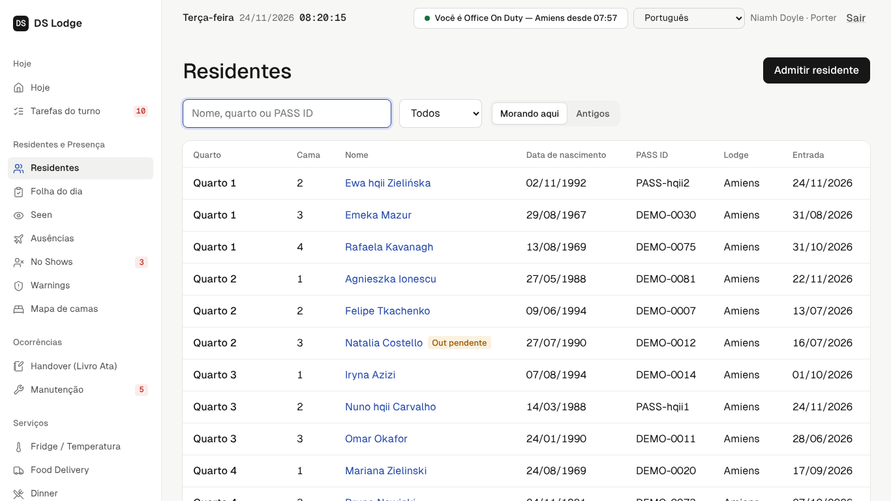
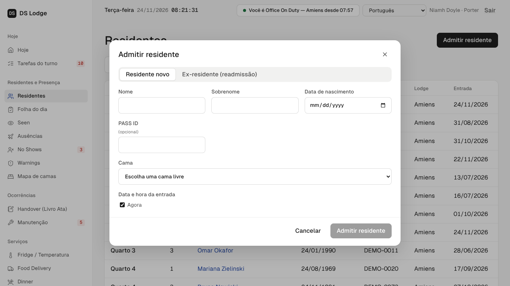
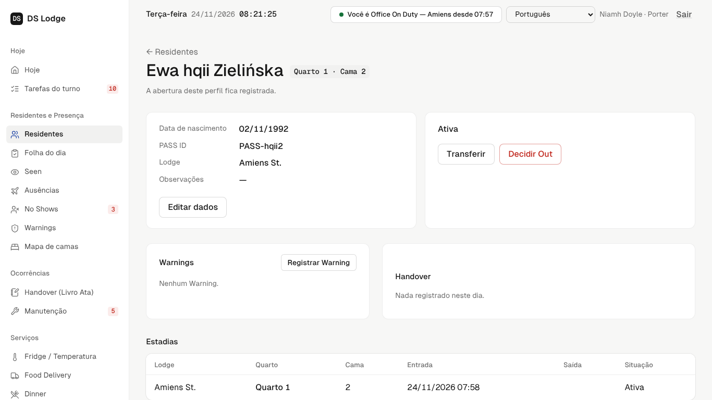
Para que serve: o cadastro de todos os residentes, atuais e antigos.
O sistema abre o perfil do residente e avisa: a abertura de cada perfil fica registrada (auditoria).
No perfil você vê: dados, a estadia atual, Warnings e ocorrências do Handover em que ele foi marcado, e o histórico de estadias. - Editar dados: corrige nome, nascimento, PASS ID e observações. - Transferir: muda o residente de cama (capítulo abaixo). - Decidir Out / Retirar Out / Efetivar Out: saída do residente. - Registrar Warning: abre o formulário de advertência.
🎥 Vídeos: 03 (admissões e Out) e 11 (transferência e efetivar Out).
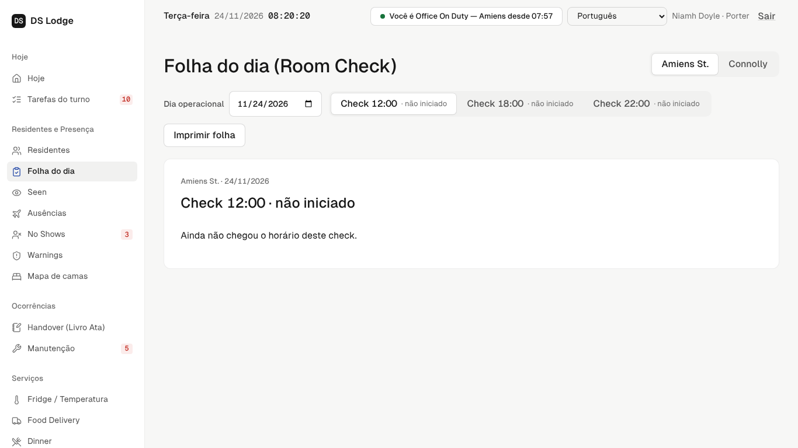
Para que serve: lançar os checks de 12:00, 18:00 e 22:00: de cada cama, quem foi visto.
Clique na primeira linha e use:
| Tecla | O que faz |
|---|---|
| V | Visto (e vai para a próxima linha) |
| N | Não visto |
| A | Ausência |
| ↑ / ↓ | Muda de linha |
| Delete | Limpa a marca |
A barra de baixo mostra o progresso (“21 de 35 marcados”). Só dá para lançar quando todos estão marcados.
Se você marcar Visto alguém que tem ausência ativa, o sistema pergunta “Deseja antecipar a presença deste residente?”: - Sim, registrar o retorno agora: encerra a ausência e conta como presente. - Não, manter a ausência: nada muda; marque como Ausência.
Imprimir folha abre a folha de papel (número, quartos, residentes atuais e linhas em branco para admissões). Use quando o sistema estiver fora do ar; imprimir não confirma nada. Depois, lance os dados no sistema.
🎥 Vídeo: 04.
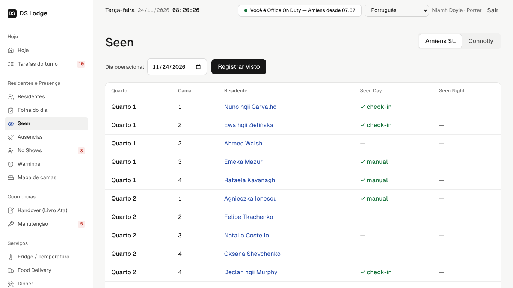
Para que serve: ver, de cada residente, se foi visto no turno Day e no turno Night, e por qual origem (check, visto manual, check-in ou Dinner).
Registrar um visto manual (“Vi este residente”) 1. Abra Seen e confira o Lodge e o dia. 2. Clique em Registrar visto. 3. Escolha o Residente (aparecem só os que estão no Lodge agora). 4. Ajuste Quando (por padrão, agora) e, se quiser, Onde (Recepção, Cozinha, Jardim…). 5. Clique em Salvar. A mensagem Visto registrado. confirma.
Um visto manual vale como evidência de presença no turno e evita No Show.
🎥 Vídeo: 05.
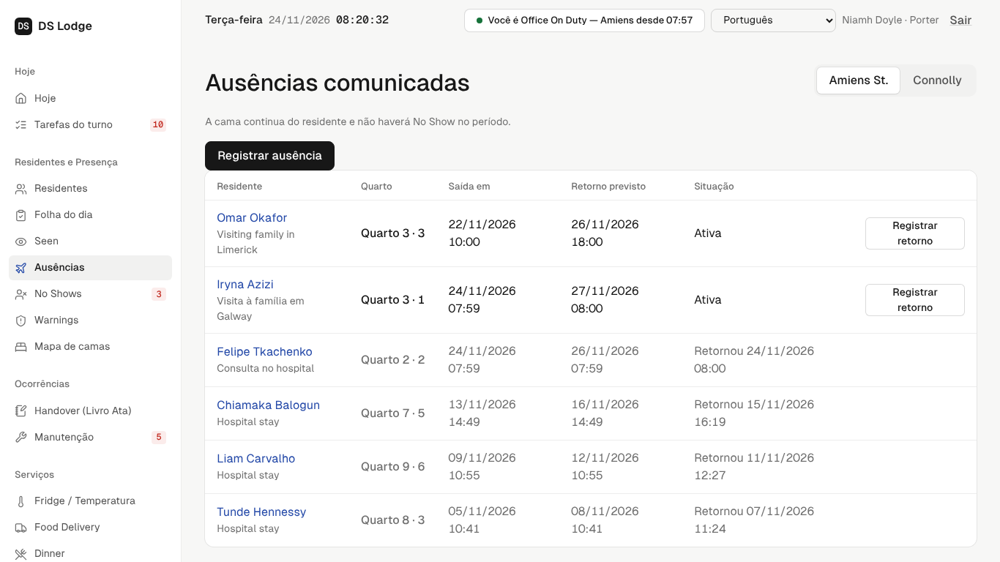
Para que serve: registrar quando o residente avisa que vai sair.
Registrar uma ausência 1. Abra Ausências e clique em Registrar ausência. 2. Escolha o Residente. 3. Confira Saída em e informe o Retorno previsto. 4. Se quiser, escreva uma Observação (hospital, visita à família…). 5. Clique em Salvar.
Enquanto a ausência está ativa, a cama continua do residente e não haverá No Show.
Registrar o retorno 1. Na linha da ausência, clique em Registrar retorno. 2. Confirme a Hora do retorno e clique em Salvar.
Retorno vencido: se passar do retorno previsto sem o residente voltar, a ausência fica marcada como Retorno vencido e entra nas Pendências de Hoje. Procure o residente, registre o retorno ou ajuste a situação.
🎥 Vídeo: 05.
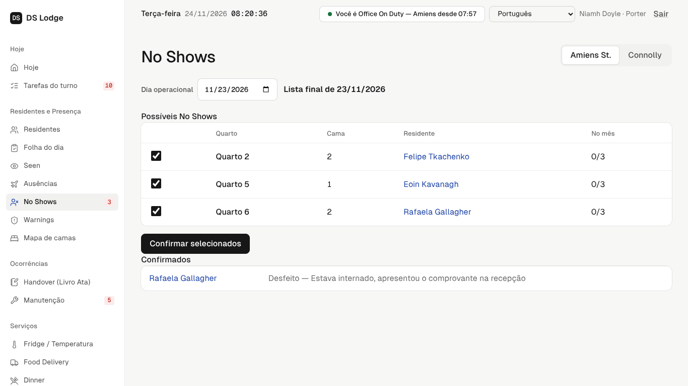
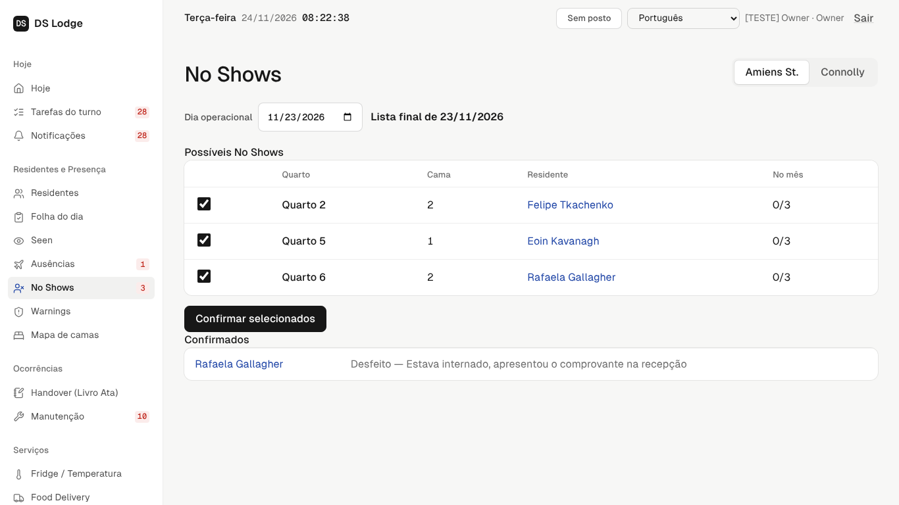
Para que serve: a lista final do dia que terminou: quem não teve nenhuma evidência de presença.
Quando abre: a lista de cada dia fica pronta às 06h30. Antes disso aparece “O dia ainda não terminou”.
Confirmar No Shows 1. Abra No Shows. A lista mostra os Possíveis No Shows do dia anterior, com o contador No mês de cada residente. 2. Se aparecer “Lista incompleta: checks por lançar”, volte à Folha do dia e lance os checks que faltam: a confirmação fica bloqueada até lá. 3. Antes de confirmar, procure quem aparece na lista: se alguém foi visto, registre o Seen ou corrija o check. 4. Marque a caixa de cada residente que realmente não apareceu. 5. Clique em Confirmar selecionados. A mensagem No Shows confirmados. confirma.
3º No Show no mês: o sistema avisa Manager e Owner (“chegou a 3 No Shows no mês”). O contador mostra o número do mês (por exemplo 2/3) e a decisão sobre o Out é da gestão.
Desfazer um No Show (Manager/Owner) 1. Na seção Confirmados, clique em Desfazer. 2. Escreva o Motivo e confirme. O registro fica Desfeito, com histórico.
Aviso das 18h30: às 18h30 o sistema mostra, na tela Hoje, quem ainda não tem evidência de presença no dia. Procure, corrija e marque. Esse aviso não registra nada.
🎥 Vídeo: 11.
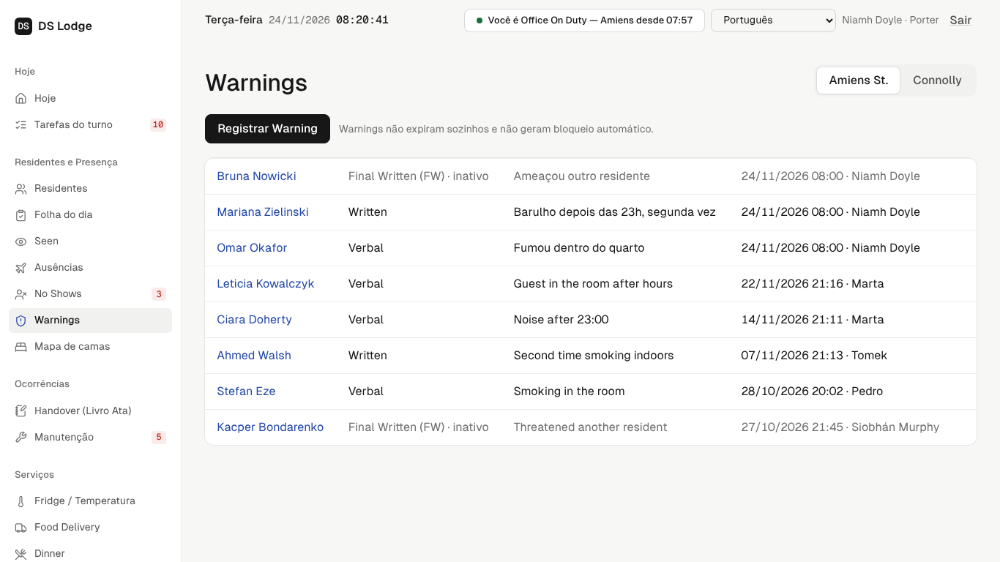
Para que serve: registrar advertências: Verbal, Written e Final Written (FW).
Registrar um Warning 1. Abra Warnings (ou o perfil do residente) e clique em Registrar Warning. 2. Escolha o Residente, o Tipo e escreva O que aconteceu. 3. Clique em Registrar. O Warning vai para o Handover e para o perfil.
Final Warning (FW) - Aparece como uma marca FW vermelha ao lado do nome do residente na folha, no perfil e no mapa de camas. - Warnings não expiram sozinhos e não geram bloqueio automático. - Só a gestão desativa um FW, sempre com motivo: botão Desativar FW.
🎥 Vídeos: 06 (registrar) e 11 (desativar FW).
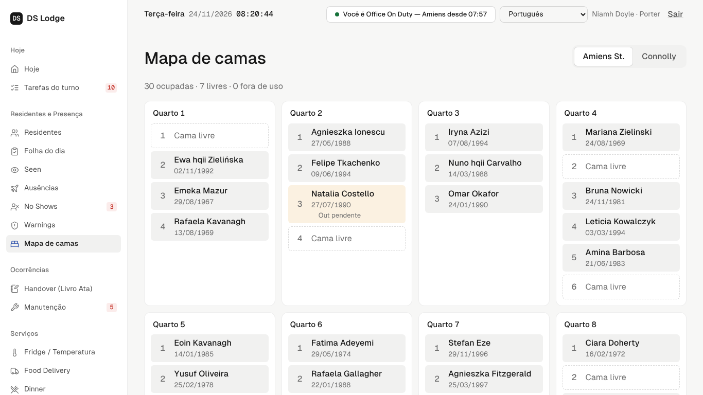
Para que serve: ver todas as camas de cada Lodge, quarto por quarto.
Marcar uma cama fora de uso (e voltar ao uso) 1. Clique em uma cama livre. 2. Para tirar de uso, escreva a Observação (por exemplo “Cabeceira quebrada”) e clique em Marcar fora de uso. 3. Para devolver, clique na cama hachurada e em Voltar ao uso.
Camas fora de uso não aparecem na lista de camas livres para admissão.
🎥 Vídeo: 11.
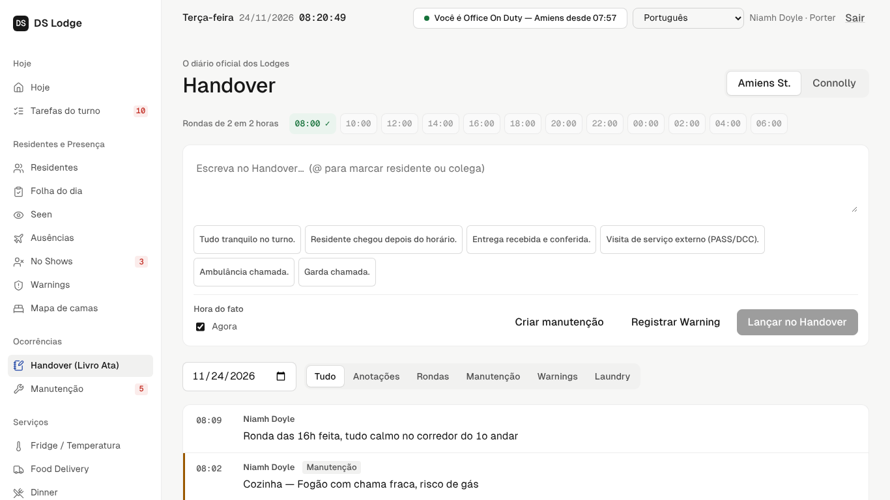
Para que serve: o diário oficial dos Lodges. Tudo o que acontece no turno é anotado aqui.
Lançamento depois do turno: se o fato é de um turno que já terminou, o sistema pede o Motivo do lançamento depois do turno (por exemplo “Esqueci de registrar”). Escolha um da lista.
As abas Tudo, Anotações, Rondas, Manutenção, Warnings e Laundry filtram o dia. O campo de data muda o dia que você está vendo.
🎥 Vídeo: 07.
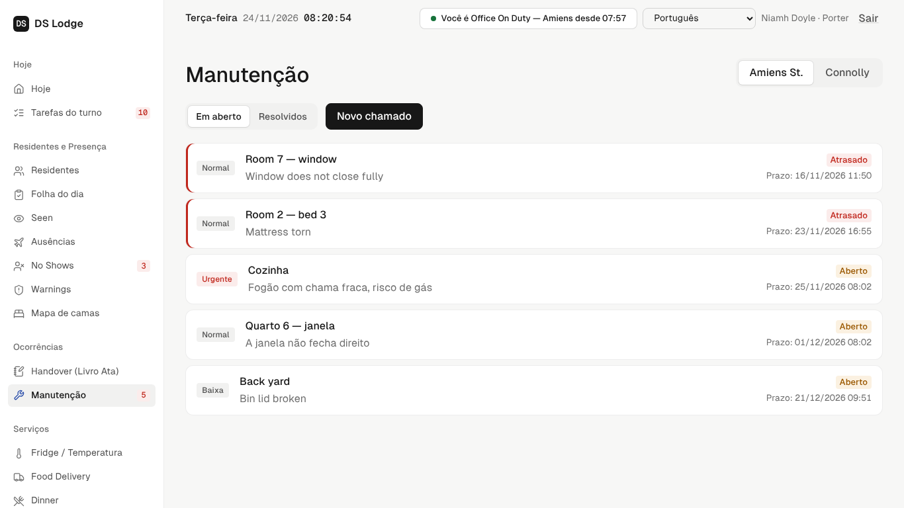
Para que serve: chamados de conserto. Qualquer Porter abre; a gestão acompanha.
Cada mudança fica no Histórico do chamado. As abas Em aberto e Resolvidos separam os chamados.
Quando o prazo passa, a gestão vê um aviso “Prazo vencido — qual é o status?” ao entrar, com as opções: Resolvido, Em andamento (novo prazo), Em espera (com observação) ou Lembrar em 24 h.
🎥 Vídeos: 08 (abrir chamados) e 12 (atualizar status).
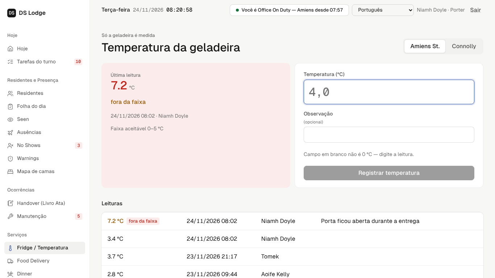
Para que serve: registrar a temperatura da geladeira. Só a geladeira é medida.
A tela mostra a última leitura e o histórico.
🎥 Vídeo: 09.
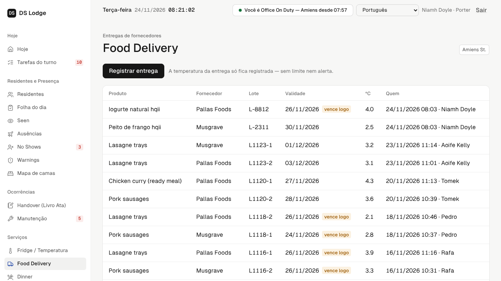
Para que serve: registrar as entregas de fornecedores (só no Lodge que tem cozinha, o Amiens).
🎥 Vídeo: 09.
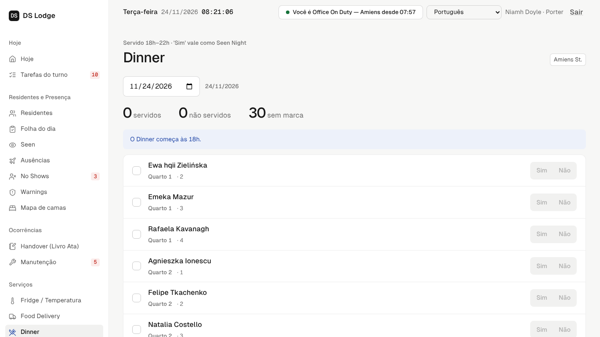
Para que serve: marcar quem jantou. O Dinner é servido das 18h às 22h, só no Lodge com cozinha (Amiens).
Marcar 1. Abra Dinner e confira o dia. 2. Em cada residente, clique em Sim (jantou) ou Não. 3. “Sim” vale como Seen Night: conta como evidência de presença e tira o residente da lista de No Show.
Antes das 18h os botões ficam bloqueados (“O Dinner começa às 18h.”).
Fechar as sobras (gestão, depois das 22h) 1. Clique em Fechar sobras. 2. Informe as Porções de sobra e as Embalagens (embalagens não são pessoas atendidas) e, se quiser, uma Observação. 3. Confirme. Depois de fechado, só o Owner (ou Developer) edita as sobras (Editar sobras).
🎥 Vídeo: 09.
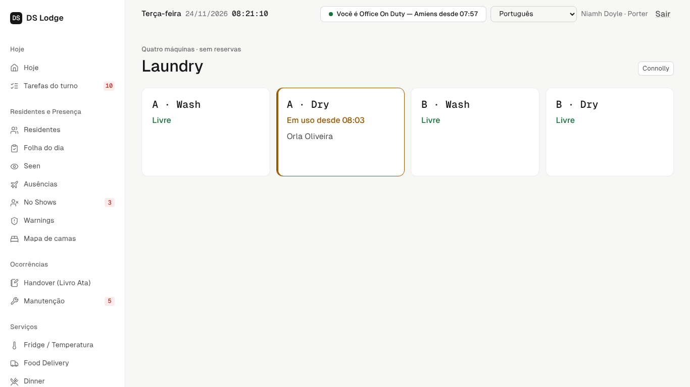
Para que serve: controlar as 4 máquinas da lavanderia (A·Wash, A·Dry, B·Wash, B·Dry), só no Connolly. Não há reservas.
Uma máquina em uso não pode ser iniciada de novo.
🎥 Vídeo: 10.
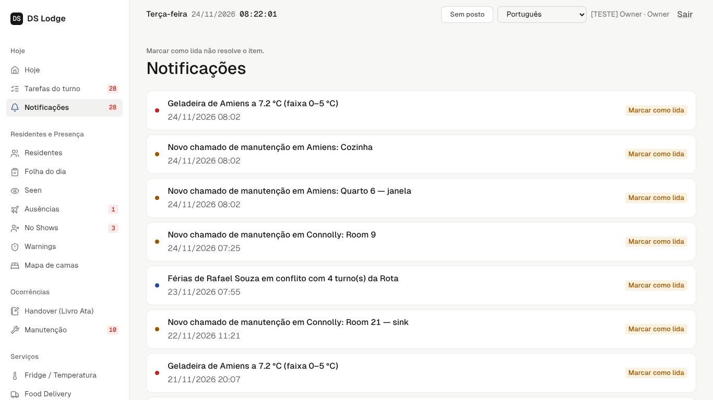
Para que serve: os avisos que o sistema envia à gestão: - Geladeira fora da faixa - Novo chamado de manutenção - 3º No Show do mês - Rota publicada abaixo da cobertura mínima - Férias em conflito com a Rota
Como usar 1. Abra Notificações. 2. Clique em Marcar como lida quando tratar o aviso.
Marcar como lida não resolve o item: o problema segue nas telas dele até ser resolvido.
🎥 Vídeo: 12.
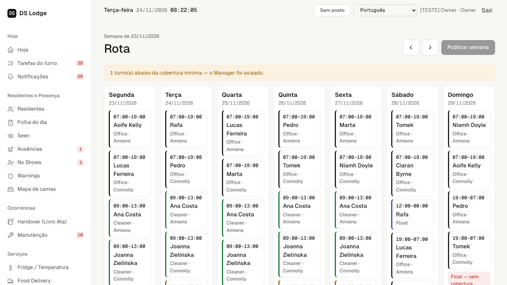
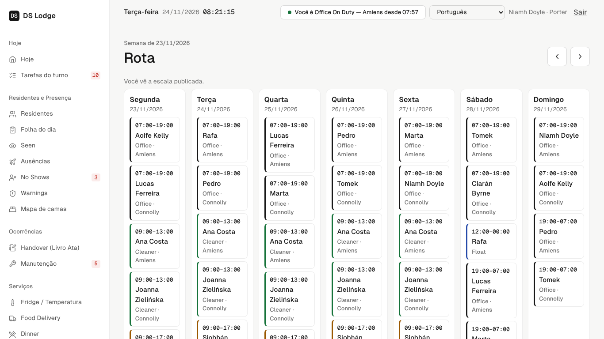
Para que serve: a escala semanal (Day, Night, Float, Cleaners e Manager).
Você vê a escala publicada. Rascunhos não aparecem.
Recusas comuns - “Esta pessoa já tem um turno neste horário.” - “Já existe um Float na escala neste horário.” - “O cargo desta pessoa não permite esta função.”
Cobertura mínima: 1 Office por turno e por Lodge e 1 Float das 12h à meia-noite.
🎥 Vídeo: 13.
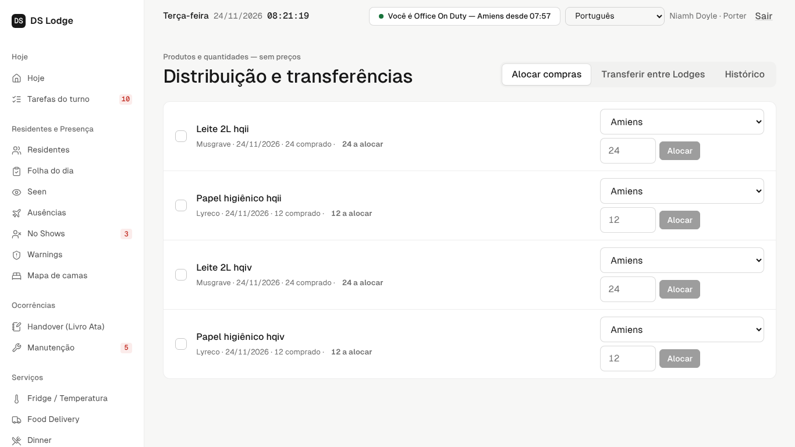
Para que serve: repartir as compras entre os Lodges e transferir produtos de um Lodge para o outro. Aqui ninguém vê preços.
A aba Histórico lista todas as alocações e transferências, com quem fez e quando.
🎥 Vídeo: 14.
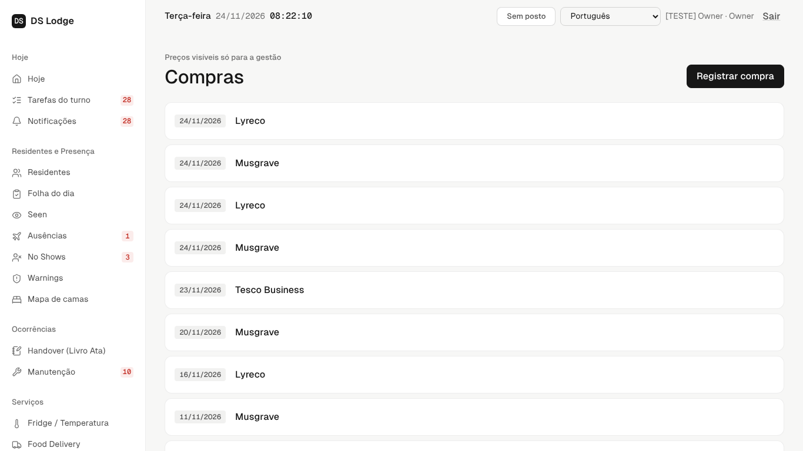
Para que serve: registrar as compras dos fornecedores. Preços e notas só a gestão vê.
Para ver as linhas e os preços de uma compra, clique nela na lista.
🎥 Vídeo: 14.
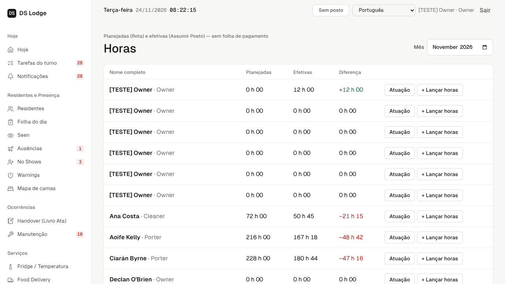
Para que serve: comparar as horas planejadas (Rota) com as efetivas (posto assumido). Não é folha de pagamento.
Ajustar um posto (esqueceu de assumir, ou encerrou depois) 1. Em Atuação, clique em Ajustar no posto. 2. Corrija o início e o fim e escreva o Motivo (obrigatório). 3. Clique em Salvar. O histórico fica guardado.
Lançar horas (cleaners e Manager, que não assumem posto) 1. Clique em Lançar horas na linha da pessoa. 2. Informe início e fim e, se quiser, uma observação. 3. Limites: até 24 horas por lançamento e não no futuro.
🎥 Vídeo: 13.
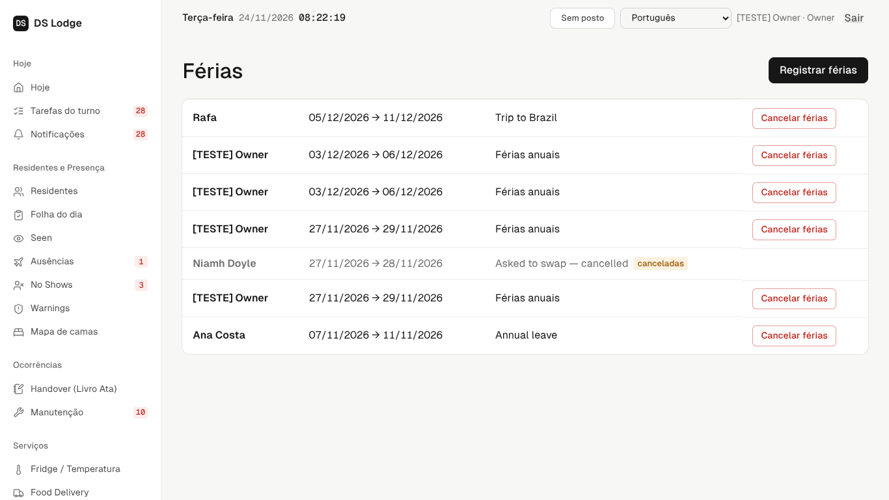
Para que serve: registrar as férias da equipe.
Se as férias coincidem com turnos da Rota, o sistema mostra “Conflito: N turno(s) da Rota neste período” e avisa a gestão: ajuste a Rota.
Para desfazer, use Cancelar férias na linha.
🎥 Vídeo: 13.
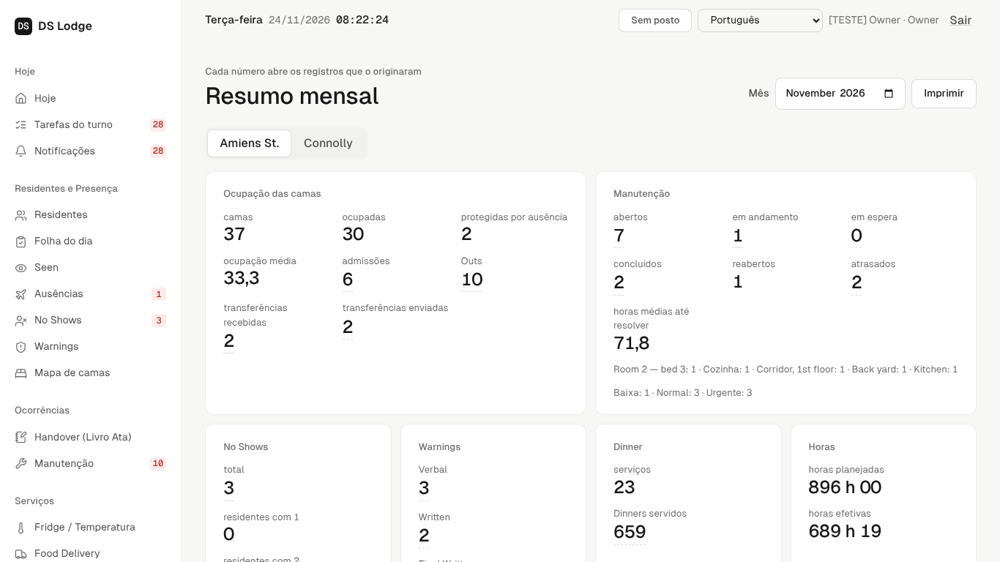
Para que serve: o resumo mensal por Lodge.
Observações: - O Dinner só aparece no Lodge com cozinha e o Laundry só no Lodge com lavanderia. - Mês atual: as horas planejadas contam a Rota do mês inteiro; as efetivas contam só até hoje.
🎥 Vídeo: 14.
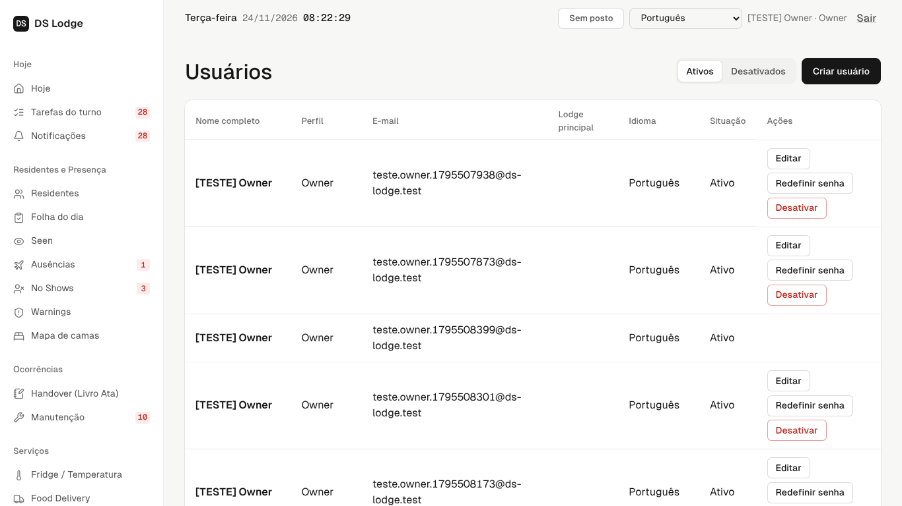
Para que serve: criar e administrar quem usa o sistema. Só a gestão faz isso.
Cleaners não entram no sistema: o Manager lança as horas deles (capítulo 23).
Clique em Redefinir senha na linha da pessoa. Uma nova senha provisória é gerada (entregue pessoalmente).
🎥 Vídeo: 15.
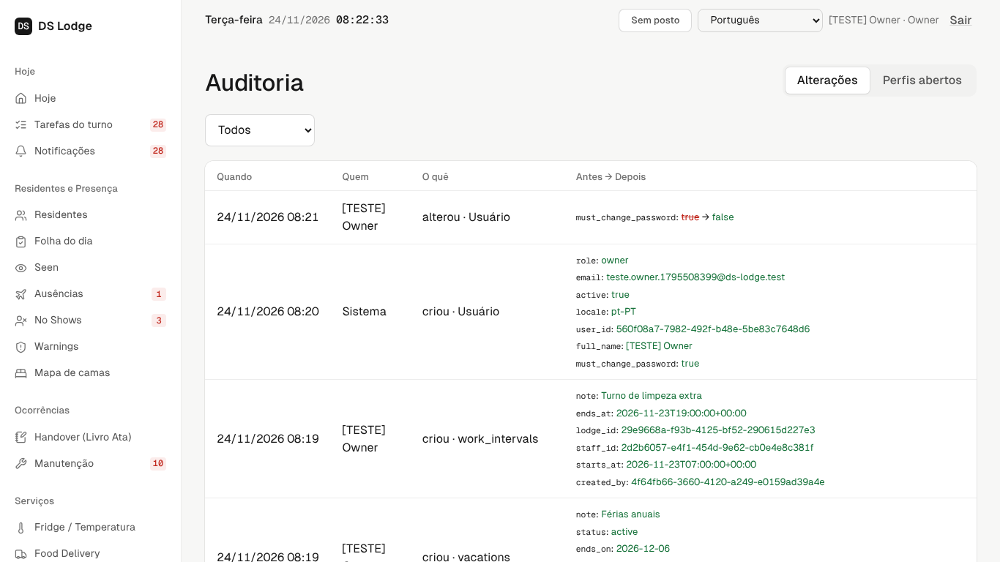
Para que serve: ver tudo o que mudou no sistema.
O histórico não pode ser apagado nem editado.
🎥 Vídeo: 15.
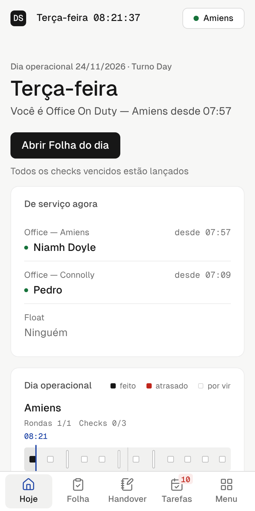
O sistema funciona no celular, com a mesma lógica: - A barra de baixo dá acesso a Hoje, Folha, Handover e Tarefas. - O botão Menu abre as demais telas e o seletor de idioma. - As tabelas viram cartões, com botões grandes.
Use o computador da recepção para as tarefas longas (como o check completo).
🎥 Vídeo: 16.
Ao começar o turno (Day 07:00 / Night 19:00) 1. Entre no sistema e assuma o posto. 2. Abra Hoje: veja as pendências e a régua. 3. Leia as últimas anotações do Handover (o turno anterior). 4. Responda ao aviso de tarefas (ou Depois).
Durante o turno - A cada 2 horas: registre a ronda no Handover. - 12:00 / 18:00 / 22:00: lance o check na Folha do dia. - Anote tudo o que acontece no Handover. - Residente avisou que vai sair: Ausência. Voltou: registre o retorno. - Algo quebrou: Manutenção. Problema com um residente: Warning. - Geladeira: registre a temperatura (duas vezes por turno). - Amiens: Food Delivery quando chegar entrega e Dinner entre 18h e 22h. - Connolly: Laundry a cada uso.
Ao terminar o turno 1. Confira as Pendências de Hoje: não deixe checks, rondas ou tarefas para trás. 2. Lance no Handover o que ficou combinado para o próximo turno. 3. Encerre o seu posto e saia.
Às 06h30 (fechamento do dia) - A gestão revisa a lista de No Shows do dia que terminou.
| Mensagem | O que significa / o que fazer |
|---|---|
| Você saiu automaticamente após 15 minutos sem atividade. | Segurança do sistema. Entre de novo. |
| Assuma um posto para fazer registros. | Você está sem posto. Vá em Assumir Posto. |
| Você não tem permissão para esta ação. | A ação é de outro perfil (por exemplo, só a gestão desativa FW) ou de outro Lodge. |
| Você pode ver esta folha, mas não lançar | Outro Lodge ou sem posto. |
| Marque todos os residentes antes de lançar o check. | Falta alguém na folha. Use a barra de progresso. |
| Ainda não chegou o horário deste check. | O check só abre 1 hora antes do horário. |
| Lista incompleta: checks por lançar | Há checks do dia sem lançar. Lance-os para liberar o No Show. |
| O dia ainda não terminou — a lista final abre às 06h30. | Espere o fechamento do dia. |
| Esta pessoa já tem um turno neste horário. | Conflito na Rota. Escolha outra pessoa ou outro horário. |
| O cargo desta pessoa não permite esta função. | Na Rota: Office só Porter; Float Porter ou Manager. |
| Mais do que a quantidade comprada. | Em Distribuição, a soma alocada passou do comprado. |
| Esta máquina já está em uso. | Finalize o uso atual antes de iniciar de novo. |
| O Dinner deste dia já foi fechado. | As sobras já foram fechadas; só o Owner edita. |
| Este check já foi lançado e não pode mais ser alterado. | A folha foi lançada. Correções são feitas pela gestão. |
| Este residente não tem mais uma estadia aberta (já saiu ou foi transferido). | A tela estava desatualizada. Recarregue. |
| Temperatura impossível (de −40 a 40 °C). | Digitou errado? Confira a leitura da geladeira. |
| Outra pessoa alterou este registro. Recarregue antes de salvar. | Duas pessoas editaram ao mesmo tempo. Recarregue a tela e refaça a alteração. |
| Já passaram mais de 72 horas — agora só o Manager ou o Owner corrigem. | Fim da janela de correção. Peça à gestão. |
| Registro não encontrado. | Link antigo ou o registro foi removido. Volte à lista. |
| Este residente não está mais neste Lodge nesse horário. | Escolha outro residente ou outro horário. |
| Sem ligação com o servidor. | O sistema só funciona online. Use a folha impressa e lance depois. |
| Algo deu errado. Tente de novo. | Erro inesperado: tente de novo e, se repetir, avise a gestão. |
Se o sistema cair no meio do turno: imprima/use a folha do dia em papel (Folha do dia → Imprimir folha), anote à mão e lance tudo quando voltar. O sistema pede motivo para lançamentos feitos depois do turno.
Manual v1 — 24/11/2026. Acompanha o sistema: se uma tela mudar, o capítulo correspondente deve ser atualizado.